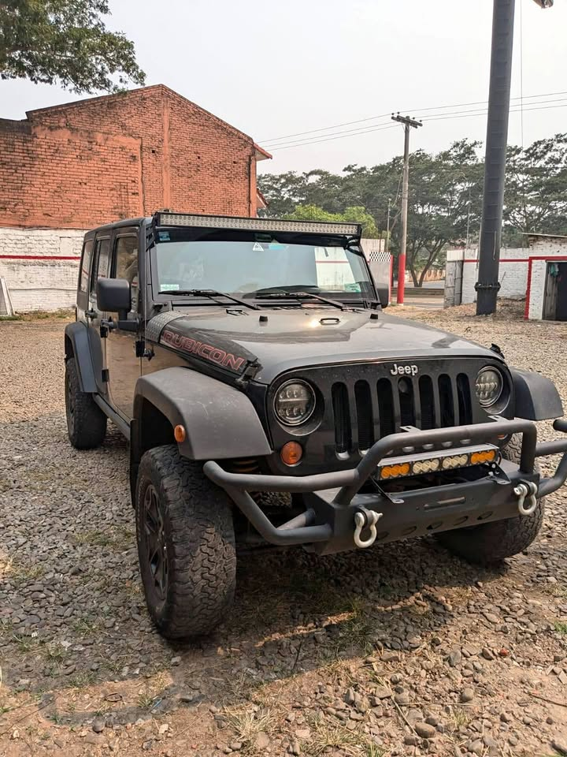

DESCRIPCIÓN:
Se vende Jeep Wrangler Rubicon, modelo 2008, en excelente estado general. Equipado con un potente motor 3.8L V6, ideal para quienes buscan fuerza y confiabilidad tanto en ciudad como en rutas off-road.
Cuenta con caja mecánica de 6 velocidades, lo que ofrece una conducción más deportiva y un mayor control en cualquier terreno.
El vehículo tiene todos los papeles al día, revisión técnica aprobada y se encuentra libre de deudas o gravámenes.
Perfecto para los amantes de la aventura, el Rubicon es reconocido por su capacidad todoterreno, con suspensión robusta, tracción 4x4 y bloqueo de diferenciales.
- Motor 3.8 litros, V6
- Transmisión manual de 6 velocidades
- Tracción 4x4
- Versión Rubicon: preparada para terrenos difíciles
- Documentación al día
- En excelentes condiciones mecánicas y estéticas